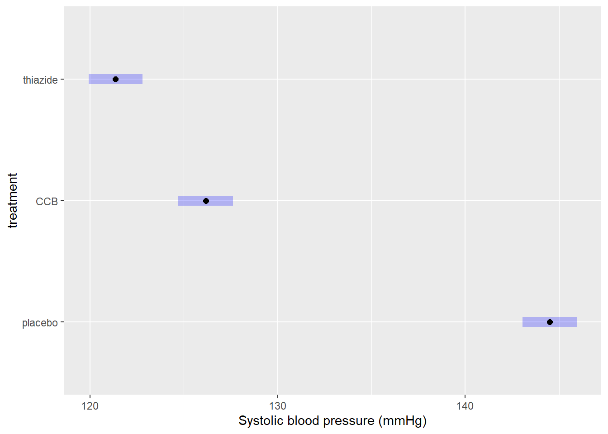

Tutorial 3 ANOVA
A method test to compare any number of means to see if they differ significantly. Observations are assumed to be independent, deviations from the group means are assumed to follow a normal distribution, and groups are assumed to have equal variance.
Summary
- Read the data into R ;
- Visualize the data;
- Fit an ANOVA:
- Perform visual diagnostics to look for deviations from the assumptions;
- Perform an omnibus test if the assumptions appear reasonable;
- Perform a post-hoc test if the omnibus test was significant;
- Report a conclusion;
- Incorporating this in scientific literature.
You can download the tutorial here and the required data set here.
3.1 Read the Data into R
I recommend saving data as comma-separated values (CSV). If you prefer reading data directly from Excel, have a look here.
Details
- Save the data in a folder;
- Open RStudio and create a new R markdown file; (File > New File > R Markdown)
- Save your R markdown file to the same location as the data;
- Set working directory to source file location. (Session > Set Working Directory > To Source File Location)
DF <- read.csv("three-groups.csv")Did that work? There are several ways to check:
str(DF)
summary(DF)
head(DF)Explanation of the output
str(DF)## 'data.frame': 90 obs. of 4 variables:
## $ SBP : int 122 119 120 129 127 118 120 124 126 117 ...
## $ treatment: chr "thiazide" "thiazide" "thiazide" "thiazide" ...
## $ age : int 32 34 36 41 35 38 36 33 39 32 ...
## $ sex : chr "female" "female" "female" "male" ...This command shows the structure of the data. It is a data frame with \(n = 60\) observations of 4 variables. SBP and age are stored as integers (int), while treatment and sex are stored character vectors (chr).
## SBP treatment age sex
## Min. :114.0 Length:90 Min. :23.00 Length:90
## 1st Qu.:122.0 Class :character 1st Qu.:32.00 Class :character
## Median :127.0 Mode :character Median :35.00 Mode :character
## Mean :131.5 Mean :35.69
## 3rd Qu.:142.0 3rd Qu.:38.00
## Max. :201.0 Max. :83.00## SBP treatment age sex
## 1 122 thiazide 32 female
## 2 119 thiazide 34 female
## 3 120 thiazide 36 female
## 4 129 thiazide 41 male
## 5 127 thiazide 35 female
## 6 118 thiazide 38 femaleMy output looks different
Then provided you did everything else correctly, the most likely reason is that your data was saved with a version of Excel where a comma is used as a decimal separator (e.g., the Dutch version). The solutions for this is simple, use read.csv2:
DF <- read.csv2("some-data-with-commas.csv")Common mistakes
- Remember to include the file extension (e.g., “two-groups.csv”) when typing the file name.
- You cannot read Excel files (.xls, .xlsx) with this function. Instead, follow the guide here, or save your data as CSV.
- Don’t open the CSV file with Excel. You don’t need Excel or Google Sheets or any other program besides R and RStudio. If you have saved your data as CSV, you can close Excel.
The next step is to ensure categorical variables are read as factors. This will allow us to use generic functions like plot and summary in a more meaningful way.
Why not just use character?
A character vector is just strings of text, numbers and/or symbols. If you were to produce a summary, this happens:
summary(DF$treatment)## Length Class Mode
## 90 character characterIt tells us this object contains 60 values, and it is stored and treated as a string of text.
The generic plot function doesn’t even work at all:
plot(SBP ~ treatment, DF)Error in plot.window(...) : need finite 'xlim' values
In addition: Warning messages:
1: In xy.coords(x, y, xlabel, ylabel, log) : NAs introduced by coercion
2: In min(x) : no non-missing arguments to min; returning Inf
3: In max(x) : no non-missing arguments to max; returning -InfNow convert the variables to factors and see how that changes the output.
(Run the code below, then run summary(DF$treatment), or plot(DF$treatment) for example.)
DF$treatment <- factor(DF$treatment)
DF$sex <- factor(DF$sex)Reordering a Factor
While it does not change any of the conclusions, it can help yourself and any readers if you put the groups in a logical order. For sex there is no logical order, but for treatment it would make sense to have the placebo first, as a reference to compare the other groups to.
To check the order of levels in a factor, use levels:
levels(DF$treatment)## [1] "CCB" "placebo" "thiazide"
My output is NULL
That means you forgot to convert your variable to a factor first:
levels(DF$treatment)## NULL# Solution
DF$treatment <- factor(DF$treatment)
levels(DF$treatment)## [1] "CCB" "placebo" "thiazide"
To change which treatment appears first, use relevel:
DF$treatment <- relevel(DF$treatment, "placebo")(Run levels(DF$treatment) again to see if it worked.)
Reordering multiple categories at once
If you want to change the order entirely, you can define the order manually as follows:
DF$treatment <- factor(DF$treatment, levels = c("placebo", "CCB", "thiazide"))Change the names of the categories
Careful, only use this if you know what you are doing. Check the order of labels first, using levels. It is easy to accidentally flip the labels of a factor and end up with nonsense.
If you want to rename the labels of a factor, for instance because you think the names are too long, you can do so as follows:
# Run this first, you have been warned
levels(DF$treatment)
# Change the names, taking into account the order of the labels above
DF$treatment <- factor(DF$treatment, labels = c("Ctrl", "CCB", "Thzd"))(Run levels(DF$treatment) again to see if it worked.)
3.2 Visualize the Data
In summary:
- Boxplots can be used as simple data exploration and to compare groups;
- If you have multiple variables, grouped boxplots can show combinations of groups;
- A violin plot is an alternative to a boxplot.
boxplot(SBP ~ sex + treatment, DF)
What to look for
Potential Outliers
A boxplot shows either of the following:

Figure 3.1: What is displayed in a boxplot in case all observations are within a certain distance from the box (A), or otherwise (B).
The interquartile range (IQR) is simply the size of the box. If all observations lie within \(1.5\times\) this range from the box, then the whiskers show the extremes of the data (fig. 1.1 A). Otherwise, the observations are drawn separately 1.1 B). The IQR is usually not shown in a boxplot, but is used internally to calculate the location of the whiskers and marked observations (if any).
Marked observations are not outliers
This is a common misconception. Though it can be an indication of outlyingness, a boxplot alone cannot tell you whether these observations will strongly affect your analysis:
- If you have a large enough sample size, you will find more extreme observations, which are eventually drawn outside the IQR. Try running:
boxplot(rnorm(1000)) - Skewed values (next section) will almost always show ‘outliers’ in the direction of skew, but these are unlikely to be outliers in the context of an appropriate model for skewed data.
- The \(1.5\times\) IQR rule is nothing special, it is merely convention. A boxplot is just a quick way to visualize numeric values.
Skew
Skew means the data-generating process follows a probability distribution that is not symmetric. In a boxplot, skew looks like this:

Figure 3.2: A boxplot of symmetric (A), right-skewed (B), and left-skewed values.
Skew is not necessarily a problem, unless it persists in the residuals of a model that assumes normally distributed errors. For an explanation of skew, see the video on probability distributions .
Differences Between Groups
A boxplot is not just a nice tool for yourself to inspect your data, but is also an effective tool to visually communicate the evidence for difference between groups:

Figure 3.3: A comparison of systolic blood pressure for different treatments and sex.
How to improve your plot
Some basic adjustments that improve any plot:
- Use informative axis labels, with unit of measurement if appropriate;
- Add an informative caption;
- Keep the numbers on the axes horizontal where possible;
- Remove unnecessary plot elements, like the box around the figure.
The changes to the code I made below can all be found in the help pages ?boxplot and ?par. I am also a big fan of the eaxis function from the package sfsmisc. The caption is added as a chunk option (i.e., ```{r, fig.cap = "..."}).
# Load a package for nice axes
library("sfsmisc")
# Change the margins (bottom, left, top, right)
par(mar = c(4, 4, 0, 0) + 0.1)
# Define the locations (helps discern between combinations of groups)
where <- c(1:2, 4:5, 7:8)
# Create the coordinate system
boxplot(SBP ~ sex + treatment, DF, at = where, axes = FALSE,
pch = 19, cex = 0.5, boxwex = 0.25, staplewex = 0,
lwd = 1.5, lty = 1, ylim = c(110, 200), xlim = c(0.5, 12),
xlab = "Treatment", ylab = "Systolic blood pressure (mmHg)")
# Add axes
axis(1, c(1.5, 4.5, 7.5), levels(DF$treatment))
eaxis(2)
# Add a lightgrey background
polygon(x = c(-1, 9, 9, -1, -1), y = c(100, 100, 210, 210, 100), col = "grey95",
border = NA)
# Add a simple grid
abline(h = seq(100, 200, 10), col = "white", lwd = 1)
abline(h = seq(100, 200, 20), col = "white", lwd = 1.5)
# Define two colors (picked from colorbrewer2.org):
cols <- c("#fb9a99", "#a6cee3")
# Redraw the boxplots on top
boxplot(SBP ~ sex + treatment, DF, at = where, axes = FALSE,
boxwex = 0.25, staplewex = 0, col = cols, add = TRUE,
pch = 19, cex = 0.5, lwd = 1.5, lty = 1)
# Add a legend
legend("topright", legend = levels(DF$sex), pch = 15, col = cols, bty = "n")
# Restore the default margins for subsequent plots
par(mar = c(5, 4, 4, 3) + 0.1)Figure 3.4: A comparison of systolic blood pressure for three groups.
From the plot you can conclude:
- There appears to be a clear outlier in the female CCB group;
- None of the groups appear skewed;
- Both the CCB and thiazide group have substantially lower blood pressure than the control, with thiazide appearing the lowest;
- This difference appears to be similar for males and females;
- Systolic blood pressure does not appear to differ by sex at all;
- The variance of all groups is similar, because the boxes are similarly sized.
This is just a sample, so whether this difference is significant, should be determined with a test.
Alternative: Violin plot
A more modern take on the boxplot is a violin plot. It combines a boxplot and a density plot. This type of visualization is richer in information than just a boxplot, but it is only meaningful if you have enough observations per group (e.g., >10):
library("vioplot") # install if missing
vioplot(SBP ~ treatment, DF)
How to interpret a violin plot
Here is a breakdown of the components shown in a violin plot:

The density plot, if you are unfamiliar with it, is like a continuous version of a histogram. It shows which values are more and less likely in the sample.
3.3 Analyze the Data
Summary (code)
# Load packages used (install if missing)
require("car")
require("emmeans")
# Fit the model
LM <- lm(SBP ~ treatment, DF)
# Perform visual diagnostics
par(mfrow = c(2, 2)) # Plot in a 2x2 grid
plot(LM, which = 1) # Residuals vs fitted
qqPlot(LM, reps = 1e4) # QQ-plot
plot(LM, which = 3) # Scale-location
plot(LM, which = 4) # Cook's distance
par(mfrow = c(1, 1)) # Restore the default
# Obs. 31 appears to be outlying:
DF[31, ]
# Omitting this observation can be justified based on age
LM <- lm(SBP ~ treatment, DF[-31, ])
# Perform an omnibus test
summary.aov(LM)
# If the omnibus test is significant, perform a post-hoc
EMM <- emmeans(LM, specs = "treatment")
pairs(EMM)
# Visualize the post hoc (see the emmeans vignette)
plot(EMM, comparisons = TRUE)
Fit the Model
In the example, we are only interested in the effect of treatment. For a single grouping variable, use:
LM <- lm(SBP ~ treatment, DF)The general notation is Outcome ~ GroupingVariable, Data. Adding more grouping variables is simple, but model selection is not, so two-way and multi-way ANOVA are explained separately in the next chapter.
Why use a linear model (lm)?
(The short answer is that ANOVA is linear and we decided to use emmeans throughout the tutorials for consistency.)
Linear means that we can express the model as intercept and slope(s):
\[\text{intercept} + \text{slope} \times \text{explanatory variable}\]
Categorical explanatory variables, like treatment, can be represented by dummy variables :
\[ \begin{aligned} x_1 &= \begin{cases} 1 \; \text{if CCB} \\ 0 \; \text{otherwise} \end{cases} \\ \\ x_2 &= \begin{cases} 1 \; \text{if thiazide} \\ 0 \; \text{otherwise} \end{cases} \end{aligned} \] These variables are equal to \(1\) if the observation belongs to that group and \(0\) otherwise. Our example model then becomes:
\[\text{SBP} = \text{intercept} + \text{slope} \cdot x_1 + \text{slope} \cdot x_2 + \text{error}\]
That might look confusing at first, because this isn’t a slope in the everyday meaning of the word. But all that ‘slope’ means in statistics is the extent to which the outcome changes, if the explanatory variable increases by \(1\).
For example, if you belong to the thiazide group, then the equation becomes:
\[\text{SBP} = \text{intercept} + \text{slope} \cdot 0 + \text{slope} \cdot 1\]
If you belong to the control group, the equation becomes:
\[\text{SBP} = \text{intercept} + \text{slope} \cdot 0 + \text{slope} \cdot 0\]
Which is simply the value of the intercept.
Hence, comparing group means is the same as fitting a linear model with only dummy variables. This is useful for a number of reasons, but primarily:
- We can use the same notation for everything from \(t\)-test to ANCOVA;
- We can use
lm, which is supported by far more functions thanaov; - We can easily correct for multiple testing .
(The traditionalaov+TukeyHSDapproach does not correct for two-way or multi-way ANOVA.)
Perform Diagnostics
The calculation of confidence intervals and \(p\)-values is based on several assumptions. If these are not reasonable, conclusions drawn from the analysis are invalid.
Additionally, outliers can have a strong influence on the estimates and \(p\)-values, so you should always check and decide whether outlying observations are genuine, or outlying for reasons that warrant exclusion.
Checking assumptions and outlyingness can be done trough visual diagnostics .
require("car") # Install if missing
par(mfrow = c(2, 2)) # Plot in a 2x2 grid
plot(LM, which = 1) # Residuals vs fitted
qqPlot(LM, reps = 1e4) # QQ-plot
plot(LM, which = 3) # Scale-location
plot(LM, which = 4) # Cook's distance
par(mfrow = c(1, 1)) # Restore the defaultShow output
(For general advice on diagnostic plots, see the video .)

The visual diagnostics confirm what was already visible in the boxplots, there is an outlier (#31) visible in each of the plots. Its Cook’s distance is well over \(0.5\).
Let’s see what the diagnostics would look like without this observation:
# Fit a model on the data, excluding obs. 31
LM2 <- lm(SBP ~ treatment, DF[-31, ])
# Run the diagnostics
par(mfrow = c(2, 2)) # Plot in a 2x2 grid
plot(LM2, which = 1) # Residuals vs fitted
qqPlot(LM2, reps = 1e4) # QQ-plot
plot(LM2, which = 3) # Scale-location
plot(LM2, which = 4) # Cook's distance
par(mfrow = c(1, 1)) # Restore the defaultWhat to look for in general
Deviations from Normality
In a QQ-plot, you can check whether the residuals deviate problematically from a normal distribution. The straight line represents a theoretical normal distribution and the black dots show where the actual residuals fall. Since the values a sample will always deviate somewhat, a confidence band is drawn around the line to provide an indication of the severity of the non-normality.
Here are three examples of random values drawn from an actual, exact normal distribution:

Figure 3.5: Normal QQ-plots of residuals from simulated data that follows a an exact normal distribution.
Note how even in data drawn from an exact normal distribution, occasional observations outside the confidence bands are quite common. This is important to keep in mind when judging the severity of a violation.
A great write-up (with examples) on what patterns to look for can be found in this answer on CrossValidated . A quick summary of problematic patterns include:
- Gaps; (Lack of values within a certain range.)
- Bulging (concave or convex); (Usually an indication of skew.)
- S-shape; (Implying light- or heavy-tailedness.)
Here are three examples of problematic patterns: (confidence band hidden for clarity)

Figure 3.6: Normal QQ-plots of residuals displaying (A) gaps; (B) bulging; (C) S-shapedness .
Non-Constant Variance
In the residuals vs fitted plot, you can see whether the observations are more or less equally dispersed around their group means. The \(x\)-axis shows the value of the group means and the \(y\)-axis the deviation from the group mean.
Here are three examples of random values with equal group variance:

Figure 3.7: Residuals vs fitted plots of values drawn from a normal distribution with equal variance.
Important to note here is that small deviations will always be present, and a smoothing line will be drawn that is not useful for ANOVA (but will be used in linear regression).
(The smoothing line can be suppressed with add.smooth = FALSE.)
Examples of unequal variance in a residuals vs fitted plot:

Figure 3.8: Residuals vs fitted plots of values drawn from a normal distribution with unequal variance.
Careful, unequal sample size can give the false appearance of unequal variance in a residuals vs fitted plot:

Figure 3.9: Residuals vs fitted plots of values drawn from a normal distribution with equal variance, but different sample sizes.
This is why you should also look at the scale-location plot:
Figure 3.10: Scale location plots of values drawn from a normal distribution with equal variance, but different sample sizes.
The scale-location plot takes the residuals and performs a transformation that allows for a simple interpretation: Rather than looking at the dispersion in the black dots, you can look at the average. Higher variance means the red smoothing line is also higher.
As a rule of thumb, you should conclude non-constant variance from a scale-location plot if the smoothing line is more than \(0.5\) higher/lower than other groups, or there is a consistent trend up/down.
Examples of non-constant variance in a scale-location plot:
Figure 3.11: Scale-location plots of values drawn from a normal distribution with unequal variance.
Potential Outliers
The Cook’s distance can be used to assess outlyingness. This is a simple measure: Greater than \(0.5\) warrants further inspection and greater than \(1.0\) is statistically outlying.
Here are three examples of random normally distributed values without any apparent outliers:

Figure 3.12: Cook’s distance of values drawn from a normal distribution.
Here are three examples of outliers:

Figure 3.13: Cook’s distance of values drawn from a \(t\)-distribution. Due to the larger mass in the tails, the \(t\)-distribution is more likely to yield outlying values.
Why \(t\)-quantiles instead of normal?
(This is a bit technical and only important if, for example, a reviewer asks about it.)
In short, I recommend using this over a normal QQ-plot, because it reflects the general notion that minor deviations in the tails should be ignored.
You may have noticed that the example code here does not actually produce a normal QQ-plot, but instead a QQ-plot for a theoretical \(t\)-distribution. (Try: qqPlot(lm(rnorm(10) ~ 1)) and look at the \(x\)-axis label.)
A little digging in the qqPlot’s github repository shows what happens:
z <- if (distribution == 't') qt(P, df=res.df-1) else qnorm(P)(Here, z is the theoretical quantile on the \(x\)-axis of a QQ-plot.)
These quantiles are used to compute where the confidence band should be drawn. If you use qqPlot(LM), these are based on a \(t\)-distribution with degrees of freedom equal to the residual degrees of freedom of the model minus one. This is done to reflect the additional uncertainty from the limited sample size. As the sample size grows (and the model complexity remains constant), the two approaches grow closer. In practical terms, this allows for slightly wider bands near the tails, the smaller the sample size is, which is a desirable property, because the smaller the sample size, the harder it is to decide whether an observation is outlying.
Another important difference you may have noticed is that qqPlot(LM) yields a narrower confidence band than qqPlot(residuals(LM)). This actually has nothing to do with the \(t\)-distribution, but with the type of confidence band drawn when using qqPlot(LM): The default argument for qqPlot(residuals(LM)) is line = "quartiles", whereas qqPlot(LM) defaults to line = "robust". The latter provides simulation-based robust regression confidence bands, which are more sensitive to non-normality, while simultaneously being less prone to false positives.3
On a general note, these bands are (both) point-based 95% confidence, meaning that there is a large chance of at least one observation outside the bands, even if the values come from a theoretical normal distribution.
Significance tests for assumptions
All significance tests can produce false positives. Always judge the severity of any supposed problems with visual diagnostics.
In cases where you are not sure an assumption is violated, it is possible to conduct a test.
Normality
Deviations from conditional normality can be formally tested using a variety of tests, all of which have different sensitivities to different aspects of the normal probability distribution. Commonly used is the Shapiro–Wilks test, which is particularly sensitive to skew and light-tailedness.6
shapiro.test(residuals(LM))Show output
##
## Shapiro-Wilk normality test
##
## data: residuals(LM)
## W = 0.48457, p-value = 3.255e-16The residuals differ significantly from a theoretical normal distribution (\(p = 3.23 \cdot 10^{-16}\)), though this is likely due to the outlier seen in the visual diagnostics, which is something you can try out:
LM2 <- lm(SBP ~ treatment, DF[-31, ])
shapiro.test(residuals(LM2))##
## Shapiro-Wilk normality test
##
## data: residuals(LM2)
## W = 0.97918, p-value = 0.1634And indeed, now there is no detected deviation from normality anymore.
This does not demonstrate the values are normally distributed
This is a common misconception. All we found is a lack of evidence against normality. But for these values to be normally distributed, they would need to range all the way from \(-\infty\) to \(\infty\), which is obviously not realistic for blood pressure.
Also see: Why do statisticians say a non-significant result means “you can’t reject the null” as opposed to accepting the null hypothesis?
Constant Variance
A robust test for non-constant variance that is not sensitive to other common issues like outliers and non-normality is the Breusch–Pagan test:
require("lmtest") # Install if missing
bptest(LM)Show output
##
## studentized Breusch-Pagan test
##
## data: LM
## BP = 2.2161, df = 2, p-value = 0.3302As expected from the visual diagnostics, group variances are not significantly different (\(p = 0.330\)).
This does not demonstrate the groups have equal variance
This is a common misconception. All we found is a lack of evidence against equal variance.
Also see: Why do statisticians say a non-significant result means “you can’t reject the null” as opposed to accepting the null hypothesis?
Outliers
A test for outlyingness is included in the car package:
require("car")
outlierTest(LM)Show output
## rstudent unadjusted p-value Bonferroni p
## 31 18.55085 8.3005e-32 7.4705e-30The test looks at every individual residual and whether it might be outlying. That of course, poses a major multiple testing issue, so the rersulting \(p\)-values are adjusted for this. When looking for outliyngness, always check the adjusted \(p\)-value.
In this case, the test is significant (\(p_{\text{adj}} = 7.47 \cdot 10^{-30}\)) and observation 31 is again pointed out to be the offending observation.
The car package contains another set of residual plots specifically to assess outlyingness:
influenceIndexPlot(LM)Show output
These show, in order:
- The Cook’s distance; (Greater than \(0.5\) is noteworthy, greater than \(1.0\) is outlying.)
- The studentized residuals; (Divided by their standard deviation for standardized interpretation.)
- \(P\)-values for outlyingess; (Corrected for multiple testing.)
- The hat-values. (A measure of relative influence.)
Observation 31 is again pointed out.
What to do if an assumption is violated?
Unfortunately this is where statistics ends. Uninstall R and RStudio from your computer and find a different profession. (…) Just kidding, under construction.
Dealing with Potential Outliers
In general, outliers should not be removed from the data, barring some exceptions.
The following are valid reasons for exclusion:
- The observation is clearly an unrealistic value;
(For example, a blood pressure of “2000 mmHg” due to a misplaced decimal separator.) - The cause of outlyingness can be traced back, invalidating the observation;
(For example, because the blood pressure monitor was placed incorrectly.) - The observation differs in another way from the rest, invalidating comparisons.
(For example, this person smoked and all others did not.)
The following are insufficient reasons for exclusion:
- The observation stands out in the diagnostic plots;
- The observation has a high Cook’s distance;
- An outlier test showed the value was significantly outlying.
These are all measures that assume your model is right, but the opposite could very well be the case: The fact that there are ‘outliers’ is often an indication the proposed model is wrong.
Which is the case in our example? Let’s inspect observation 31 once again:
DF[31, ]## SBP treatment age sex
## 31 201 CCB 83 femaleThe observation belongs to an 83-year old individual, which is considerably older than any of the other participants. If there had been more elderly individuals, we could opt to include age in the model. In this case though, there is only one observation this much older than the rest and it happens to have an outlying value for blood pressure, making this fall into category 3, warranting exclusion.
DF2 <- DF[-31, ]
LM <- lm(SBP ~ treatment, DF2)This is a new model, fitted to different data, so you should rerun the diagnostics.
I can’t trace back the source of outlyingness
Then you have two options:
- Compare the results with and without the suspected outlier. If you end up with similar numbers and arrive more or less at the same conclusion, you could opt to simply mention the outlier (and its influence) in the results and write your conclusion normally;
(Even better would be to include both outputs (e.g., as supplementary.) - Use an alternative to ANOVA, like the Ksruskal–Wallis test, which does not make the same distributional assumptions.
(See?kruskal.test.)
My data set has many outliers
This is more often than not an indication that the assumptions of the model are not reasonable in the first place: Perhaps the data-generating process produced skewed values, or has far heavier tails than the normal distribution does. Perhaps there is an error in how the data are collected, or maybe your data were not read correctly by the software.
Simple removal is at best a questionable research practice and at worst plain falsification. Unless you can trace back the origin of the outliers, consider consulting a statistician.
Perform an Omnibus Test
To print a classic ANOVA table, run the following:
summary.aov(LM)Show output
## Df Sum Sq Mean Sq F value Pr(>F)
## treatment 2 8921 4460 283.6 <2e-16 ***
## Residuals 86 1353 16
## ---
## Signif. codes: 0 '***' 0.001 '**' 0.01 '*' 0.05 '.' 0.1 ' ' 1The omnibus test is significant (\(F = 283.6\), \(p < 2 \cdot 10^{-16}\)), meaning there is a significant difference among group means. For a full explanation of the table above, see the video .
Perform a Post Hoc Analysis
If the omnibus test is not significant, skip this section.
After concluding that there is a difference among means, a post hoc can be used to compare individual groups and determine which groups differ. If you simply want to compare all groups with all other groups, you can do so like this:
require("emmeans")
EMM <- emmeans(LM, specs = "treatment")
pairs(EMM)Show output
## contrast estimate SE df t.ratio p.value
## placebo - CCB 18.33 1.03 86 17.746 <.0001
## placebo - thiazide 23.13 1.02 86 22.592 <.0001
## CCB - thiazide 4.81 1.03 86 4.653 <.0001
##
## P value adjustment: tukey method for comparing a family of 3 estimatesAll groups differ significantly from each other (\(p < 0.0001\)), with thiazide appearing most effective. These \(p\)-values are already corrected for multiple testing.
If you want to obtain the actual, non-discretized \(p\)-values, you can use as.data.frame:
as.data.frame(pairs(EMM))## contrast estimate SE df t.ratio p.value
## 1 placebo - CCB 18.327586 1.032768 86 17.746090 2.591527e-10
## 2 placebo - thiazide 23.133333 1.023978 86 22.591634 2.591527e-10
## 3 CCB - thiazide 4.805747 1.032768 86 4.653271 3.476791e-05
Since this incurs a multiple testing problem, it is good practice to limit the comparisons to only those strictly necessary to answer the research question.
Treatment-vs-control style comparison
In the example used so far, we could have chosen to only compare the treatments to the control group (and not to each other). The package emmeans has a built-in argument to support this option:
EMM <- emmeans(LM, specs = trt.vs.ctrl ~ treatment)
as.data.frame(EMM$contrasts) # as.data.frame prevents roundingShow output
## contrast estimate SE df t.ratio p.value
## 1 CCB - placebo -18.32759 1.032768 86 -17.74609 1.295763e-10
## 2 thiazide - placebo -23.13333 1.023978 86 -22.59163 1.295763e-10Custom comparisons
Only use this if you have a priori reasons to exclude certain comparisons. You cannot first perform all comparisons and then decide which comparisons to keep. This is a form of \(p\)-hacking.
If your research question can be answered satisfactorily with a specific set of comparisons, you can do so by creating custom contrasts. This is beyond the scope of this tutorial, but well documented in the emmeans vignette .
Obtaining confidence intervals for group means
Comparisons show you the estimated differences. But what if you wanted to include confidence intervals for the estimated group means (a common request by reviewers)? You can obtain those by printing the object we just created:
as.data.frame(EMM) # as.data.frame prevents rounding## treatment emmean SE df lower.CL upper.CL
## 1 placebo 144.5000 0.7240617 86 143.0606 145.9394
## 2 CCB 126.1724 0.7364397 86 124.7084 127.6364
## 3 thiazide 121.3667 0.7240617 86 119.9273 122.8061The confidence intervals are:
- Placebo: 143.1–145.9
- CCB: 124.7–127.6
- Thiazide: 119.9–122.8
It is also possible to plot the confidence intervals:
plot(EMM, xlab = "Systolic blood pressure (mmHg)")
3.4 Correctly Phrase the Results
If the \(p\)-value of the omnibus test is less than the chosen level of significance
(This is the case in the example.)
While you can technically still summarize three comparisons in writing, it is right at the border of what should be put in a table instead, and referred to in brief. Generally, for post hoc analyses I recommend showing the average differences, confidence intervals and \(p\)-values in a table and/or figure. However, this section is meant to help you phrase results, so examples are provided regardless.
Examples of precise language:
- Systolic blood pressure differed significantly by type of treatment (\(p < 2 \cdot 10^{-16}\)), with CCB and thiazide resulting in 18.3 and 23.1 mmHg lower blood pressure on average, respectively (CCB: \(p = 2.59 \cdot 10^{-10}\), thiazide: \(p = 2.59 \cdot 10^{-10}\));
- The thiazide group had significantly lower systolic blood pressure than CCB (\(\hat{\beta} = 4.8\) mmHg, \(p = 3.48 \cdot 10^{-5}\));
- Thiazide resulted in 4.8 mmHg lower systolic blood pressure on average (95% CI: 2.3–7.3);
Examples of incorrect, incomplete, or imprecise language:
- The alternative hypothesis was true // The null-hypothesis was false;
- The difference was significant (\(p < 0.05\));
- The treatments outperform the control.
Why paste tense?
The results of a single experiment, no matter how convincing, can never prove something to be true. The results were observed, and in this one experiment, the treatments outperformed the control.
Use present tense only for statements that have been demonstrated repeatedly, are generally agreed upon, or are easily observable, e.g.:
- Smoking causes cancer;
- Current climate-change is mainly caused by human activities;
- Most people use smartphones nowadays.
If the \(p\)-values of the omnibus test is greater than the chosen level of significance
Examples of precise language:
- Systolic blood pressure did not differ significantly by type of treatment (\(p = \dots\));
- There is insufficient evidence to conclude either treatment worked (\(p = \dots\));
- There was a trend towards lower blood pressure on either treatment, but the differences were not significant (\(p = \dots\)).
Examples of incorrect, incomplete, or imprecise language:
- The treatments did not work;
- There was no difference (\(p < 0.05\));
- We accept the null-hypothesis.
Why can’t I say I accepted the null-hypothesis?
This is imprecise language because it distorts the order of null-hypothesis significance testing. Every tests starts with pretending the null-hypothesis is true, and then considering how rare a result this would be. You did not accept the null-hypothesis because of the \(p\)-value, but rather, you started by taking on the null-hypothesis to even compute that \(p\)-value.
If the omnibus test was insignificant, this is where the analysis ends. Do not include a post hoc, as that could be considered a form of fishing.